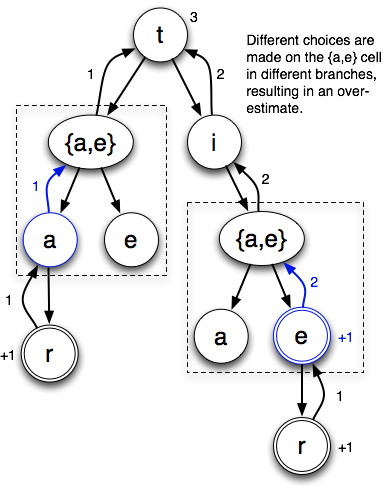
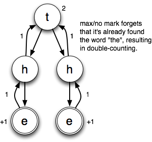
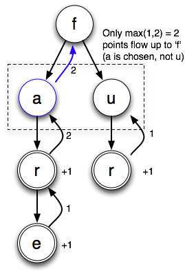
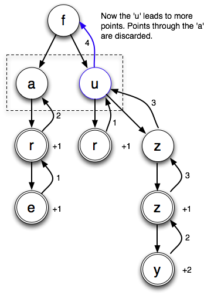

01.25.14
Posted in boggle at 1:47 pm by danvk
A Boggle-obsessed friend recently asked how he could read all the posts about that game on my blog. I used to include categories on every post, but removed them when I updated the design of danvk.org. The categories are still there, though! Here’s a link to the Boggle Category. It’s better to read the posts in chronological order, starting from the first.
Here they are for easy clicking:
Stepping back a little bit, what’s the status of my Boggle efforts?
The overall goal is to find the highest-scoring Boggle board and prove that there are no better boards out there.
I’ve solved this problem for 3×3 Boggle boards. Here’s the best board:
P E R
L A T
D E S
Its longest words include REPLATED and REPASTED. You can see all the words here. This board has more points on it than any other board (using the Enable2K word list) and I’ve proved it.
The 4×4 problem is much harder, though, because there are eight billion times more boards to consider! I believe that this board is the best one:
P E R S
L A T G
S I N E
T E R S
You can see a list of all the words on it here. The longest word is REPLASTERING. I haven’t been able to prove it, though, and I haven’t put any serious time into the problem since 2009.
You can find all the Boggle-related code I’ve written on github and learn all about the algorithms and techniques by browsing posts in the Boggle Category on this blog.
Permalink
07.03.12
Posted in boggle, web at 10:42 am by danvk
See that Online Boggle Solver link on the right? Bet you’ve never clicked it!
I built the online solver back in 2006, mostly just for fun. In the six years since, I’ve wound up using it almost exclusively on my phone during real-life Boggle games. The iPhone didn’t exist when I built that page, and it is a device for which its fancy design (with hover effects and fixed position elements) is very ill-suited. Minimal designs tend to work better on Mobile, and I’ve just pushed out a new version for phones which is very minimal indeed.
The code behind this boggle solver differs from my other boggle code in that it’s designed for low latency rather than high throughput. This is precisely what you want from a web solver. You’re only finding the words on a single board, so time spent loading the word list dominates time spent finding words on the board. The current version uses a custom dictionary which can be MMAPped. This winds up being about 3x faster than reading a dictionary text file and building a Trie on every invocation.
I haven’t worked on Boggle in the past three years, so the state of the art in finding the highest-scoring boards is still where it was when I made my last blog post about breaking 3×3 Boggle. The interesting development then was that you could get something like a 1000x speedup by upper-bounding whole classes of boards rather than scoring each board individually. This is a big enough speed boost to make 3×3 Boggle “solvable” in a day on a desktop computer, but not enough to make 3×4 or 4×4 solvable, even on a big cluster of computers. I was optimistic that memoization could give some more big wins, but when those failed to materialize I got frustrated and stopped working on the project.
Permalink
08.11.09
Posted in boggle at 9:01 pm by danvk
Hopefully the last boggle post for a while! I figured I should throw up a few more examples while I still have time left on my OmniGraffle trial.
There are two main shortcomings to the max/no mark upper bound:
- It can’t keep track of which words it’s already found.
- It can’t keep track of which choices it’s made on each cell.
These can both be fixed, but only by incurring great computational complexity. Remember the tradeoff between the “tightness” of a bound and the difficulty of computing it?
Our first example:
Let’s look at the search tree starting with the “t” cell. There are three possible words: “tar”, “tie” and “tier”. Here’s the search tree that max/no mark generates:

(I’m drawing the trees slightly differently than I did in the last post, to make the branching more explicit. Branches inside dotted lines come from multiple possibilities on a cell. Other branches result from the ordinary process of looking in different directions from a cell.)
In this example, max/no mark chooses the “a” when it gets to the “{a,e}” cell directly from the “t”. This makes sense, since it results in one point to the e’s zero. However, when it gets to the “{a,e}” cell through the “ti”, it chooses the “e”. This also makes sense, since it gets two points from the “e” (“tie” and “tier”) vs. zero from the “tia” prefix. By the time it makes this choice, it has no memory of choosing the “a” the last time it encountered this cell. If it did, since the “tie” prefix results in two points to the “ta” prefix’s one, it would make sense to go back and change that choice. But remembering this would require lots of expensive bookkeeping. It’s faster (but yields a looser bound) if we just accept the possibility that we’ll make different choices.
Example number 2 of max/no mark’s failings:

The problem in this case is that max/no mark doesn’t remember which words it’s already found. At first glance, it seems like this problem would be easy to remedy. And it certainly would on this board, in which each cell only has a single possible letter. But if you think about a board with lots of choices, you’ll start to see why it’s best to just give up and accept a looser bound.
Permalink
Posted in boggle at 1:41 pm by danvk
After the last post, several people mentioned that they were confused about how the “max/no mark” upper bound on the highest score in a class of Boggle boards worked. With some help from OmniGraffle, I’ve created some instructive examples.
Here’s a class of boards:
The dots mean “no letters here”. The class contains two different boards:
It contains two boards. The one with an “a” has two points worth of words on it, while the one with a “u” only has one. (We’re only looking at words starting with ‘f’ here.)
The diagrams show that the solver starts with the ‘f’ on each board and explores adjacent cells. When it finds a word, it scores it and passes the total score back up the depth-first search tree.
Here’s how the max/no mark bound sees that board class:

When it gets to the “{a,u}” cell, it tries both possible letters. The “a” tree brings back 2 points, whereas the “u” tree brings back 1 point. So it chooses “a” and counts two points. As it so happens, this is the score of the highest-scoring board. The sum/union bound would have added the 1 and the 2, resulting in an upper bound of 3. The max/no mark bound takes advantage of the fact that this cell can only be one of two possibilities, not both.
Now what if we throw a few more letters on:
With the new letters, there are more points coming from the u:

The two points going through the ‘a’ are dropped on the floor. sum/union would have resulting in a bound of 4+2. When there are lots of letter choices on every cell, you can see why max/no mark is a much tighter bound.
It’s important to note that there are two sources of branching in these search trees: (1) being able to go in multiple directions from a cell (i.e. f->u->r or z) and (2) having multiple choices on a cell (i.e. f->a or u). The max/no mark bound sums the scores resulting from choices in case (1) and takes the max of choices in case (2). The sum/union bound takes the sum in both cases.
Permalink
08.08.09
Posted in boggle, math, programming at 10:35 am by danvk
Why is finding the highest-scoring Boggle board so difficult? It’s because there are so many boards to consider: 2^72 for the 4×4 case and 2^40 for the 3×3 case. At 10,000 boards/second the former corresponds to about 2 billion years of compute time, and the latter just two years. Just enumerating all 2^72 boards would take over 100,000 years.
So we have to come up with a technique that doesn’t involve looking at every single board. And I’ve come up with just such a method! This is the “exciting news” I alluded to in the last post.
Here’s the general technique:
- Find a very high-scoring board (maybe this way)
- Consider a large class of boards
- Come up with an upper bound on the highest score achieved by any board in the class.
- If it’s lower than the score in step #1, we can eliminate all the boards in the class. If it’s not, subdivide the class and repeat step #2 with each subclass.
Classes of Boards
By “class of boards”, I mean something like this:
| {a,e,i,o,u} |
{a,e,i,o,u} |
r |
| {b,c,d,f,g,h} |
a |
t |
| d |
e |
{r,s,t,v} |
The squares that contain a set of letters can take on any of those letters. So this board is part of that class:
and so is this:
All told, there are 5 * 5 * 6 * 4 = 600 boards that are part of this class, each with its own score. Other fun classes of boards include “boards with only vowels” (1,953,125 members) and “boards with only consonants” (794,280,046,581 members).
Follow me past the fold for more…
Read the rest of this entry »
Permalink
« Previous entries
Next Page »